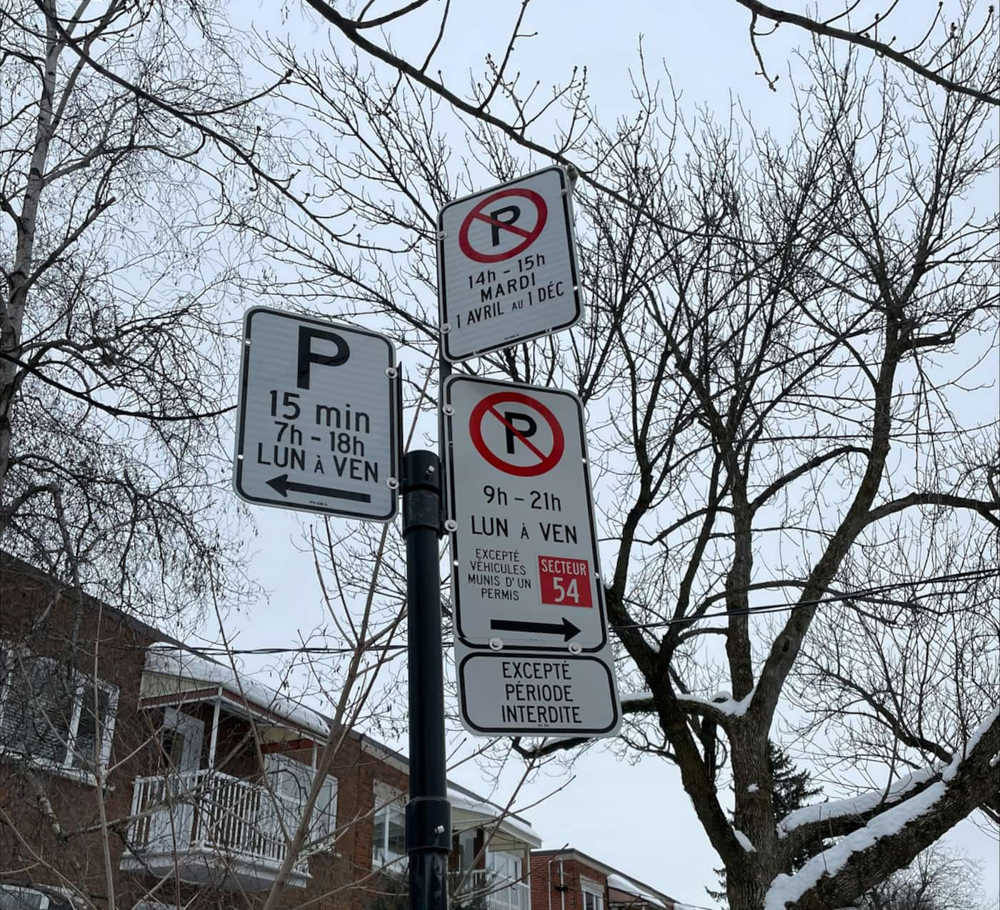
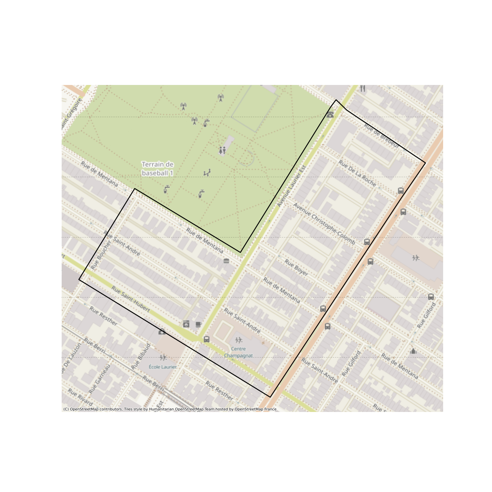
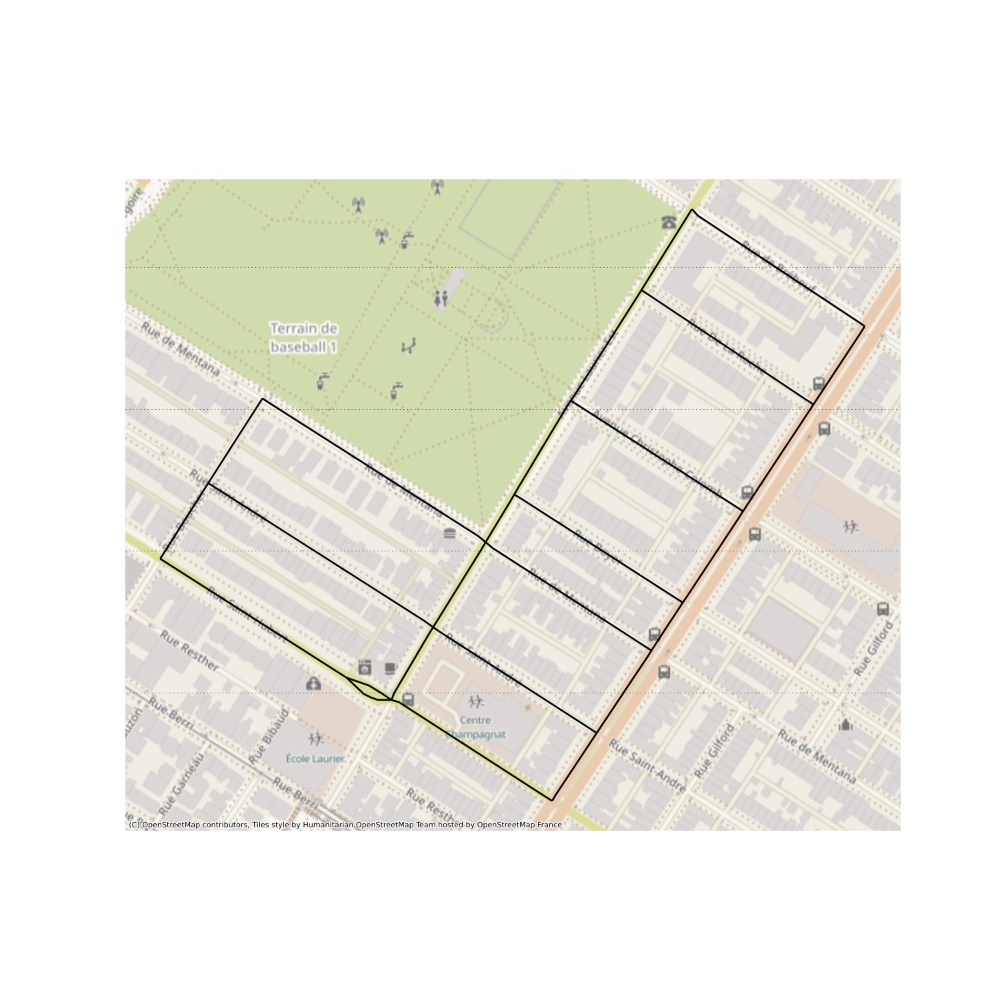
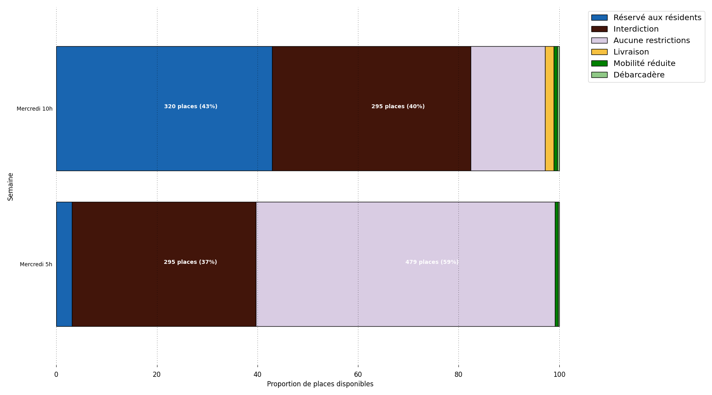
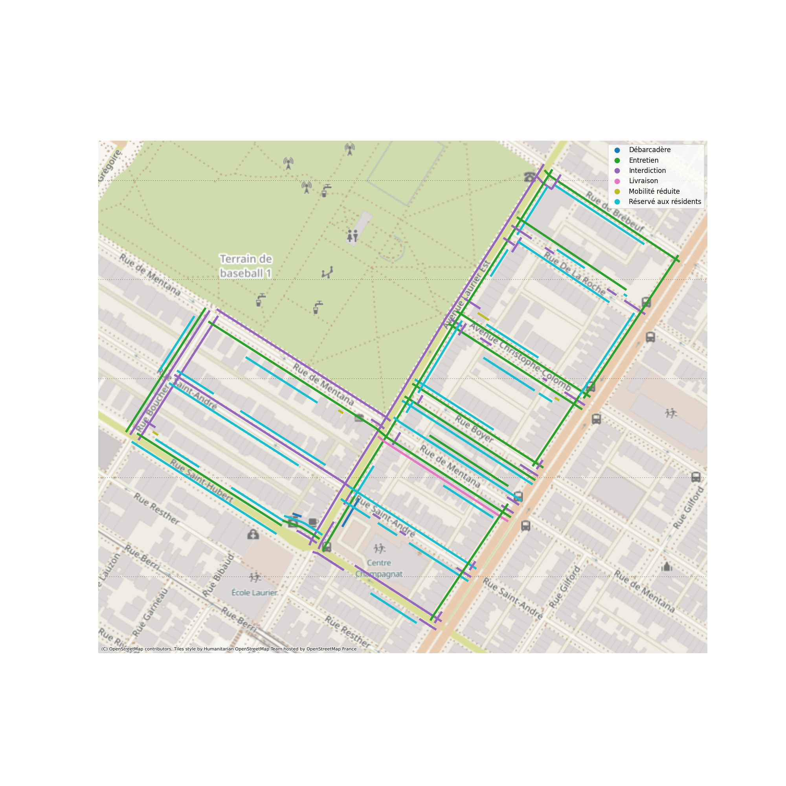

1. Exploration des réglementations de stationnements

Vous êtes vous déjà demandé qu’est ce qui occupe la plupart de la place sur la bordure de rue ? La réponse est le stationnement. Néanmoins, il n’est pas répartit de façon égale partout. Entre autres, les demandes des citoyens, les passages de bus où encore le nettoyage de rue viennent réglementer qui et quoi peut utiliser la bordure de rue à tout moment du jour et de la nuit.
Dans ce notebook, nous allons essayer de comprendre comment une la bordure de rue est allouée dans zone de l’arrondissement Plateau-Mont-Royal mais aussi de savoir où il est possible ou non de se stationner.
Dans ce but, nous allons utiliser les données issues de SIGNALEC. Ce sont des données d’opérations de pose et de mise à jours des différents panneaux de stationnements. La base de données est composée de deux tables :
- une table de point GPS qui représentent les poteaux ainsi que les différents types de panneaux accrochés dessus,
- et l’autre qui donne une description de chaque panneau possible.
Pour le traitement de données et l’analyse, nous nous baserons sur deux paquets python suivant :
1.1. Données Nécéssaires
1.1.1. Données SIGNALEC préprocessées
Les données proviennent du portail des données ouvertes de la ville de Montréal. Elles ont été pré-traitées à l’aide du script signalec.py en libre accès sur mon github personnel. Le préprocessing correspond au map-matching des poteaux sur les segments du réseau routier de Montréal et au chainage des différents panneaux entre eux pour créer des segments de réglementation.
En effet chaque poteau comporte plusieurs réglementations différentes et une zone de réglementation est définie soit par :
- un panneau de début (fléche du troittoir vers la rue) et un panneau de fin (flèche de la rue vers le trottoir).
- un panneau de répétition (sans flèche où avec un flèche de double sens).
Chaque zone doit être inscrite entre deux intersections. C’est-à-dire qu’une zone ne peu s’éntendre d’un tronçon routier à un autre sans un rappel de la réglementation sur le prochain tronçon.
L’algorithme traite alors chaque tronçon indépendemment, isole les panneaux qui ont une réglementation similaire (ici qui ont la meme description de signalisation ou RPA) et les transformes en zone géographique le long du réseau routier.
curblr = gpd.read_file("../signalec_to_curblr/output/sig_sta_preprocessed.geojson") curblr.rename(columns=lambda x: x.lower(), inplace=True) curblr[["id_trc", "start", "end", "length", "description_rpa"]].round().head()
| idtrc | start | end | length | descriptionrpa | |
|---|---|---|---|---|---|
| 0 | 1230036 | 0.0 | 13.0 | 13.0 | \A EN TOUT TEMPS |
| 1 | 1230036 | 56.0 | nan | 14.0 | \A EN TOUT TEMPS |
| 2 | 1230036 | 0.0 | nan | 70.0 | ¶ 19h-20h MER. 1 AVRIL AU 1 DEC. |
| 3 | 1230036 | 0.0 | nan | 70.0 | \A EN TOUT TEMPS |
| 4 | 1230037 | 0.0 | 13.0 | 13.0 | \A EN TOUT TEMPS |
Dans l’exemple ci-dessus, on voit que l’interdiction d’arrêt en tout temps, sur le tronçon `123006` débute au commencement du tronçon et fini à environs 13m de l’intersection de début. Sur le même segment, une autre interdiction d’arrêt commence à 56m du tronçon et s’etend jusqu’à l’intersection. C’est une configuration normale puisque pour des raisons de sécurité il est interdit de s’arrêter proche d’une intersection car cela impacte la visibilité de l’intersection (ex: un pietons qui traverse).
Note: Le sens du référencement linéaire des poteaux sur le réseau routier est effectué dans le sens de la numérisation du réseau routier (soit dans le sens de la numérotation civique dans le cas de Montréal).
1.1.2. Correspondance entre les réglementation de SIGNALEC et leur format JSON
Dans les données ci-dessus, les réglementations sont décrites textuellement. Pour pouvoir faire des requètes informatiques sur ces réglementation, il est nécéssaire de transformer l’information dans un format intelligible pour l’ordinateur. Le fichier `rules.json` contient le mapping entre les réglementation textuelle et un format JSON utilisée par la classe Curb (que l’on utilisera un peu plus loin) qui permet de gérer les différentes réglementation de stationnement. Comme c’est un peu long et rebarbatif à lire, on le cache dans un fichier séparé et n’affichons qu’un exemple de ce mapping ci-dessous.
# modèle utilisé par la classe RestrictionHandler data = { "properties": { "id": None, "end": None, "start": None, "id_trc": None, "length": None, "realEnd": None, "realStart": None, "definition": {}, "cote_rue_id": None, "non_parcouru": False, "parentLength": None } } # Correspondance entre SIGNALEC et le modèle ci dessus. with open('rules.json', 'r', encoding='utf-8') as f: convert = json.load(f) print(convert["\\P 19h-20h MER. 1 AVRIL AU 1 DEC."])
{'completed': True, 'restrictions': [{'type': 'Entretien', 'jours': ['mercredi'], 'heure_debut': '19:00', 'heure_fin': '20:00', 'jour_debut': 1, 'jour_fin': 1, 'mois_debut': 'Avril', 'mois_fin': 'Décembre'}], 'extended_attributes': {'angled': False, 'number_of_places': '', 'fixed_number_of_places': False}, 'interdiction_complete': False}
1.1.3. Zone d’étude
Pour des raisons de performance et de lisibilité, nous traitons uniquement une petite zone de l’ile de Montréal. La zone choisie correspond à quelques rues à l’Est du parc Laurier.
limit = gpd.read_file("../signalec_to_curblr/data/limit.geojson") ax = limit.plot(figsize=(15, 15), facecolor="none", edgecolor="k", linewidth=2, linestyle="-") ax.tick_params(left = False, right = False , labelleft = False , labelbottom = False, bottom = False) cx.add_basemap(ax, crs=limit.crs)

Figure 1 : Zone d’étude
1.1.4. Le réseau routier
Enfin il nous faut charger le réseau routier de la zone pour pouvoir connaitre la taille des rues. En effet, ci vous avez prété attention plus haut, dans les données réglementations, nous connaissons la tailles des réglementations mais pas la longueur des rues. Cette information est essentielle pour savoir si une réglementation couvre la totalité d’une rue.
url_road = "https://donnees.montreal.ca/dataset/984f7a68-ab34-4092-9204-4bdfcca767c5/resource/9d3d60d8-4e7f-493e-8d6a-dcd040319d8d/download/geobase.json" roads = gpd.read_file(url_road) limit = limit.to_crs(roads.crs) roads = gpd.sjoin(roads, limit[['geometry']], predicate='within', how='inner') roads = roads.rename(columns=lambda x: x.lower()) ax = roads.plot(figsize=(15, 15), facecolor="none", edgecolor="k", linewidth=2, linestyle="-") ax.tick_params( left=False, right=False, labelleft=False, labelbottom=False, bottom=False ) cx.add_basemap(ax, crs=roads.crs)

Figure 2 : Réseau routier
1.2. Combinaisons des différents ensembles de données
Ici nous associons les réglementations avec les rues et avec leur représenation en JSON.
1.2.1. Longueurs des zones et longueurs des rues
# comput segment length segments_length = roads.to_crs('epsg:32188').set_index('id_trc').length.to_frame('length') # add segment length to reglementation data curblr = curblr.join(segments_length, on='id_trc', lsuffix='_rule') # add road geometry to reglementation data curblr = curblr.join(roads.set_index('id_trc')[['geometry']].rename_geometry('street_geom'), on='id_trc') # if end is set to None in reglementation data, set it to the length of the segment curblr.loc[curblr['end'].isna(), 'end'] = curblr.loc[curblr['end'].isna(), 'length_rule'].copy() # show curblr[["id_trc", "start", "end", "length_rule", "length"]].round().head()
| idtrc | start | end | lengthrule | length | |
|---|---|---|---|---|---|
| 0 | 1230036.0 | 0.0 | 13.0 | 13.0 | 70.0 |
| 1 | 1230036.0 | 56.0 | 14.0 | 14.0 | 70.0 |
| 2 | 1230036.0 | 0.0 | 70.0 | 70.0 | 70.0 |
| 3 | 1230036.0 | 0.0 | 70.0 | 70.0 | 70.0 |
| 4 | 1230037.0 | 0.0 | 13.0 | 13.0 | 79.0 |
Les valeurs dans le champ `end` qui étaient à `nan` ont ont été remplacées par la taille du tronçon de rue.
1.2.2. Format de réglementation
Nous devons maintenant créer le format JSON des réglementations afin de pouvoir utiliser la classe Curb. Cette classe a été développé dans le but d’aider à l’analyse des réglementations de stationnement, cette classe fait partie du paquet onstreetparkingstudy.
res_ext = [] for idx, curb in curblr.iterrows(): if curb.description_rpa in convert.keys(): curb_data = deepcopy(data) curb_data['properties']["id"] = idx curb_data['properties']["end"] = curb.end curb_data['properties']["start"] = curb.start curb_data['properties']["id_trc"] = curb.id_trc curb_data['properties']["length"] = curb.length_rule curb_data['properties']["realEnd"] = curb.end curb_data['properties']["realStart"] = curb.start if curb.side_of_street == 1: curb_data['properties']["cote_rue_id"] = curb.id_trc * 10 + 1 else: curb_data['properties']["cote_rue_id"] = curb.id_trc * 10 + 2 curb_data['properties']["parentLength"] = curb.length curb_data['properties']['definition'] = convert[curb.description_rpa] curb_data['type'] = 'Feature' curb_data['geometry'] = { 'type': 'LineString', 'coordinates': [list(x) for x in list(curb.geometry.coords)] } if curb.geometry.is_empty: continue res_ext.append(curb_data)
Voici un exemple d’une règlementation de stationnement dans le format JSON
{
"properties": {
"id": 0,
"end": 12.868282603590274,
"start": 0.0,
"id_trc": 1230036,
"length": 12.868282603968101,
"realEnd": 12.868282603590274,
"realStart": 0.0,
"definition": {
"completed": true,
"restrictions": [
{
"type": "Interdiction",
"jours": [],
"jour_fin": null,
"mois_fin": null,
"heure_fin": null,
"jour_debut": null,
"mois_debut": null,
"heure_debut": null
}
],
"extended_attributes": {
"angled": false,
"number_of_places": "",
"fixed_number_of_places": false
},
"interdiction_complete": false
},
"cote_rue_id": 12300362,
"non_parcouru": false,
"parentLength": 70.17735135691429
},
"type": "Feature",
"geometry": {
"type": "LineString",
"coordinates": [
[
-73.5896995038337,
45.53038002698135
],
[
-73.58965052535827,
45.53043408262109
],
[
-73.58961113710203,
45.53047775480375
]
]
}
}
1.3. Analyse de la capacité
Il est maintenant temps de faire quelques analyses avec l’aide de la classe Curbs ! :D
1.3.1. Chargement des données dans Curb
from lapin.core.restrictions import Curbs json_regulation = deepcopy(res_ext) # la classe s'attend à certain noms pour les colonnes. roads = roads.rename(columns={"id_trc": "segment", "nom_voie": "street"}).copy() laurier_curb = Curbs.from_json( regulations=json_regulation, roads=roads, veh_size=6, # taille des véhicules utilisée (en mètre) )
1.3.2. Capacité par type de réglementations
Une des fonctionnalité de la classe est de connaitre le nombre de stationnement, aussi appelée la capacité d’une rue, par type de réglementation. Voici ce que ça donne sur notre zone d’étude :
laurier_curb.get_capacity_by_reg()
| Interdiction | 295.0 |
| Aucune restrictions | 479.0 |
| Mobilité réduite | 5.0 |
| Réservé aux résidents | 25.0 |
| Débarcadère | 2.0 |
Remarquez que seules les réglementation dites permanente, soit sans contraintes temporaire, sont présentes. En effet si aucune information temporelle n’est founie en intrant alors seule les réglementations permanentes sont calculées. Faisons un autre essai en spécifiant un jour et une heure.
laurier_curb.get_capacity_by_reg(hour=datetime.time(10), day='mer')
| Interdiction | 295.0 |
| Aucune restrictions | 110.0 |
| Réservé aux résidents | 320.0 |
| Mobilité réduite | 5.0 |
| Débarcadère | 3.0 |
| Livraison | 13.0 |
| Entretien | 60.0 |
Tout de suite, d’autres types de réglementation apparaissent sur la zone. Il se trouve qu’il y a en effet des zones de débarcadère, de zones de livraisons et des entretiens qui sont présents sur la zone le mercredi à 10h00. Maintenant nous pouvons visualisez ces informations !
- Visualisation de la capacité par type de réglementation
Pour ce type de graphique, je préfères montrer deux scénarios. Le premier en heure de pointe, lorsqu’il y a le plus de réglementations différentes active et qu’il peut être difficile pour un visiteur de se stationner. Le second en heure creuse, là où il y a le moins de réglementations actives. Ainsi moins de bruit se retrouve dans le graphique que lorsque toutes l’information, pour chaque journée et chaque heure est montrée.
Les définitions de graphiques avec matplotlib sont toujours très verbeuses. Néanmoins ci-dessous on retrouve la présentation graphique de la capacité pour les scénarios :
- Mercredi à 10a.m
- Mercredi à 5a.m
# Plotting restriction for Wednesday # Capacitée à 10h le mercredi laurier_pointe = laurier_curb.get_capacity_by_reg(hour=datetime.time(10), day='mer') # Capacité à 5h le mercredi laurier_creu = laurier_curb.get_capacity_by_reg(hour=datetime.time(5), day='mer') laurier_reg = pd.DataFrame.from_dict(laurier_pointe, orient='index', columns=['Mercredi 10h']) laurier_reg_ = pd.DataFrame.from_dict(laurier_creu, orient='index', columns=['Mercredi 5h']) laurier_reg = pd.concat( [ laurier_reg, laurier_reg_ ], axis=1 ) laurier_reg = laurier_reg.loc[[ 'Débarcadère', 'Aucune restrictions', 'Réservé aux résidents', 'Interdiction', 'Livraison', 'Mobilité réduite' ]] laurier_reg = laurier_reg.sort_values('Mercredi 10h', ascending=False) laurier_reg_perc = laurier_reg / laurier_reg.sum() * 100 laurier_reg_perc.T.plot.barh( stacked=True, #colormap='tab10', color=color, figsize=(18,10), width=0.8, ).legend( bbox_to_anchor=(1.0, 1.0), fontsize='large' ) ax = plt.gca() ax.set_ylabel("Semaine") ax.set_xlabel("Proportion de places disponibles") ax.invert_yaxis() ax.grid(True, which='major', axis='x') ax.grid(False, which='major', axis='y') for n, x in enumerate([*laurier_reg.T.index.values]): for (proportion, count, y_loc) in zip(laurier_reg_perc.T.loc[x], laurier_reg.T.loc[x], laurier_reg_perc.T.loc[x].cumsum()): if proportion > 20: plt.text(y=n, x=(y_loc - proportion) + (proportion / 2), s=f'{count:.0f} places ({proportion:.0f}%)', color="white", fontsize=10, fontweight='bold', font='calibri' ) plt.tight_layout() f = plt.gcf() f

Figure 3 : Capacités par réglementation
1.3.3. Carte des réglementations
La dernière visualisation de ce notebook est la représentation des zones de réglementations sur une carte. Faire une belle cartographie demande du temps et de l’effort et ne peu pas être complétement automatisée. Ici je présente une façon rapide de présenter l’information sous forme de carte et il reste donc beaucoup de place à l’amélioration :).
- Fonctions utiles pour notre carte
from typing import Tuple, List import numpy as np import shapely def cut_line_at_dist(line:shapely.LineString, dist: float) -> Tuple[shapely.LineString, shapely.LineString]: """ Cuts a line in two at a distance from its starting point. This is taken from shapely manual and modified to always return a tuple of two Linestring. Parameters ---------- line : shapely.LineString Line to cut distance : float Cuting distance Returns ------- Tuple[shapely.LineString, shapely.LineString] First and last half of the Line cut at distance `dist` """ if np.round(dist,0) <= 0.0: return [[], shapely.LineString(line)] if np.ceil(dist) >= line.length: return [shapely.LineString(line), []] coords = list(line.coords) for i, p in enumerate(coords): point_dist = line.project(shapely.Point(p)) if point_dist < dist: continue if point_dist == dist: return [ shapely.LineString(coords[:i+1]), shapely.LineString(coords[i:]) ] cp = line.interpolate(dist) return [ shapely.LineString(coords[:i] + [(cp.x, cp.y)]), shapely.LineString([(cp.x, cp.y)] + coords[i:]) ] def split_line_with_points(line:shapely.LineString, points:List[shapely.Point]) -> List[shapely.LineString]: """Splits a line string in several segments considering a list of points. The points used to cut the line are assumed to be in the line string and given in the order of appearance they have in the line string. Taken from https://stackoverflow.com/a/39574007 with minor modifications. Parameters ---------- line: shapely.LineString Line to split points: List[shapely.Point] Collection of point where to split the linestring. Should be in sequential order. Returns ------- List[shapely.LineString] Lines segments cut at each point Example ------- >>> line = LineString( [(1,2), (8,7), (4,5), (2,4), (4,7), (8,5), (9,18), ... (1,2),(12,7),(4,5),(6,5),(4,9)] ) >>> points = [Point(2,4), Point(9,18), Point(6,5)] >>> [str(s) for s in split_line_with_points(line, points)] ['LINESTRING (1 2, 8 7, 4 5, 2 4)', 'LINESTRING (2 4, 4 7, 8 5, 9 18)', 'LINESTRING (9 18, 1 2, 12 7, 4 5, 6 5)', 'LINESTRING (6 5, 4 9)'] """ segments = [] current_line = line for p in points: if not current_line: break d = current_line.project(p) seg, current_line = cut_line_at_dist(current_line, d) segments.append(seg) segments.append(current_line) return segments v_interpolate = np.vectorize(shapely.line_interpolate_point) v_split_line = np.vectorize(split_line_with_points)
Les données de réglementation traitée sont extraites de la classe Curb sous la forme de table. Cette table ne contient pas la géométrie des segments nécéssaire à la réalisation de la carte.
# récupère l'information des réglementation sous forme de table curb_gdf = gpd.GeoDataFrame(laurier_curb.to_dataframe(), crs='epsg:4326') curb_gdf = curb_gdf.to_crs('epsg:32188') # isole les information de référencement linéaire start = curb_gdf["loc_start"].values end = curb_gdf["loc_end"].values lines = curb_gdf["geometry"].values # Creer les points de départ et de fin des reglementation sur le tronçon pt_start = v_interpolate(lines, start) pt_end = v_interpolate(lines, end) # créer les segments de réglementations res_geom = list(map(split_line_with_points, list(lines), zip(pt_start, pt_end))) res_geom_ = [lines[1] if lines[1] else None for lines in res_geom] # set geometry et geometry_length curb_gdf["res_geom"] = res_geom_ curb_gdf["geom_length"] = [line.length if line else 0 for line in res_geom_] curb_gdf.set_geometry("res_geom") curb_gdf[['id', 'name', 'side_of_street', 'geom_length']].round(2).head()
id name sideofstreet geomlength 0 1230036 Interdiction 1 70.18 1 1230036 Interdiction -1 14.16 2 1230036 Entretien -1 14.16 3 1230036 Interdiction -1 56.01 4 1230036 Entretien -1 56.01 Maintenant que les données sont prêtes, il suffit d’appliquer un offset pour les visualiser (les réglementations étant référencée sur la méme ligne, il faut les espacer pour qu’elles ne s’empilent pas les unes sur les autres).
def offset(geom: shapely.LineString, distance: float) -> shapely.LineString: return shapely.offset_curve(geom, distance) v_offset = np.vectorize(offset) grouped = curb_gdf.groupby(["id", "side_of_street"]) curblr_off = [] for _, data in grouped: mapping = {x: i + 1 for i, x in enumerate(data["name"].unique())} data["offset"] = data["name"].map(mapping) * data["side_of_street"] * -1 curblr_off.append(data) curblr_off = pd.concat(curblr_off) curblr_off['geometry'] = v_offset(curblr_off.res_geom, curblr_off.offset * 5) ax = curblr_off.plot(figsize=(20, 20), alpha=1, column="name", legend=True, linewidth=4) ax.tick_params( left=False, right=False, labelleft=False, labelbottom=False, bottom=False ) cx.add_basemap(ax, crs=curblr_off.crs)

Figure 4 : Carte des réglementations
Et voila ! La carte des réglementation sur la zone d’étude ! Bien sur, avec une carte web ou en travaillant la carte et la légende, il serait possible de faire ressortir la temporalités des restrictions sur la carte. Cela laisse du travail pour une prochaine fois :)
1.4. Limitations
Les données de SIGNALEC ne sont pas toujours à jours et peuvent comporter des erreurs de saisies. Pour m’en rendre compte, j’ai étudier la correspondance entre les panneaux sur ma rue et la signalisation dans SIGNALEC. Bien que l’échantillons ne soit pas représentatif, plusieurs panneaux n’étaient pas à jours. Les résultats sont donc à prendre avec un grain de sel.
En bonus voici une photo de moi qui prend en photo des panneau :